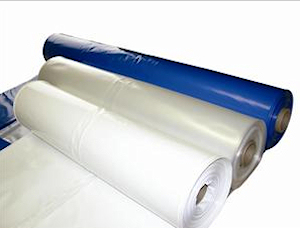
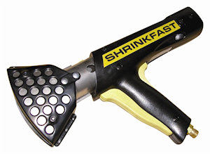
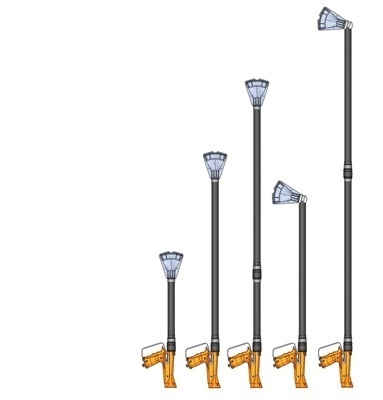
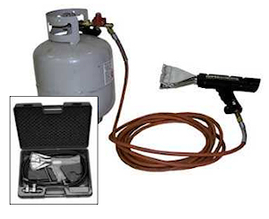
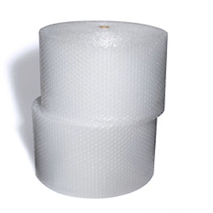

Shrink Wrap

Can you shrink wrap a geodesic dome? Certainly!
See the video below to see how one person covered an 18-foot geodesic dome, then read on for more details on shrink wrap material.
Shrink wrapping: covers small to extra-large items
The term refers to a wide variety of plastic films which shrink when heated. Its strength, even after being shrunk is quite impressive, up to 900 pounds per square foot (for 12mil thickness). Available colors are blue, white and clear.
We see shrink-wrapped products every single day in many applications, wrapping your new DVD to grocery items. For our purposes of covering geodesic domes we will focus on the commercial and industrial grade shrink wrap, meaning a thickness of 6mil or more. Shrink Wrap is applied by draping the sheet over the dome structure and applying heat with a hand-held propane powered heat gun. This is a one use application.
Here is a summary of thicknesses and characteristics:
| 6mil | Used on smaller items such as boats, shed frames, pallets and storage of machinery. |
| 7mil | Standard thickness for boat shrink wrapping in areas with snow loads, light construction jobs and transportation of medium machinery . |
| 8mil/8.5mil | Preferred thickness for covering large boats, protecting large building frames as well as large items with sharp protrusions for transportation or storage. |
| 9mil | This thickness is usually the minimum for flame retardant shrink wrap. Highly durable and suited for making containments and wrapping tall structures such as scaffolding. Often offered with flame retardant characteristics. |
| 10mil | Versatile thickness ideally suited for wrapping large and tall items and for covering oddly shaped equipment for storage or transportation. |
| 12mil | Commonly the thickest grade available. It is normally always produced with flame retardant additives. Meets, or exceeds, NFPA 701 specifications for extinguishing itself. Flame retardant shrink wrap is a must if to be used as a cover for geodesic dome structures. |
Shrink wrap tape is available for seaming larger sections together. Note that tape does not shrink.
Tools used for shrink wrapping:

The tools required are basic ones: a heat gun, extensions for hard to reach places, a cutting knife and some shrink tape. Optionally you may want to use a tensioning tool to further fasten your cover.
Other shrink wrap characteristics
In addition to flame retardant qualities, you can also find shrink wrap with enhance ultraviolet inhibitor additives
- 12 mil shrink film can withstand over 900 PSF
- Will hold up under extreme weather conditions
- Translucent to let a large amount of light inside the geodesic dome structure
- Easy to repair, simple to create ventilation in the form of windows
- Strong enough to handle freeway and railway speeds
- Seams bond through heat, creating a seamless containment
- Will last up to 2 years in fully exposed outdoor conditions
- When Ethyl Vinyl Acetate is added, it keeps the film soft and flexible in sub-freezing temperatures.
- Qualifies as a recyclable plastic
- Usually easier to install than competing materials like visqueen plastic or C&A films
- Clean, professional appearance
- Commonly offered in blue, white and clear
- Available in widths up to 40 feet, more at certain suppliers
Downsides to Shrink wrap for geodesic dome covering
Fire hazard: this is a weakness only if you wish to use shrink wrap that does not include flame retardant treatment, To cover a geodesic dome it is almost mandatory to use the thickest material available which is presently 12mil. Look for a wrap containing specialized additives to extinguish the cover within four seconds from removal of ignition source.
UV resistance: with additives shrink wrap can last up to 2 years under constant and direct sunlight.
Condensation and heat: shrink wrap is weatherproof, so it does not breathe and this creates a heat and condensation build-up. So make sure you create openings to let air flow inside the dome. An opening at the top is strongly suggested to let the hot air escape.
Also: Cost of using a shrink wrap heat gun can be a major expense if you decide on purchasing this piece of equipment ($500 to $1000 for a kit). Your best bet is to rent one from a local tool rental outfit or look up boat shrink wrap services in your area. Their skill may save you a lot of hassles and potential holes to fix.
How much does shrink wrap cost?
Here is a chart found on the web (January 2012). Obviously, pricing varies between suppliers but you can get a sense of the expense of the base material to cover your geodesic dome
| Product | Description | Price |
| 20′ x 80′ Roll | MIL: 9 Roll Weight: 75 lbs Sq Ft/Roll: 1600 |
$204.00 |
| 20′ x 100′ Roll | Mil: 9 Roll Weight: 95 lbs Sq Ft/Roll: 2000 |
$255.00 |
| 30′ x 80′ Roll | Mil: 9 Roll Weight: 110 lbs Sq Ft/Roll: 2400 |
$306.00 |
| 30′ x 100′ Roll | Mil: 9 Roll Weight: 135 lbs Sq Ft/Roll: 3000 |
$382.00 |
| 26′ x 100′ Roll | Mil: 10.5 Roll Weight: 140 lbs Sq Ft/Roll: 2600 |
$387.00 |
Shrink wrapping tips
| If you have no experience with shrink wrapping, either learn or get a professional. Shrink wrapping is not rocket science but it does require care and practice. There are many videos on the web and many how-to’s on the web that will help you understand how its done. Look at the bottom of this page for links to some manufacturers and video tutorials. |
| Study your geodesic dome structure for potential problems: by this we mean to go over your entire dome structure and look for sharp edges and anything else that could rip the shrink wrap or be a hazard when you begin. Measure your area to cover. Often you may need more than one piece and so you will want to heat weld sections before starting to shrink the material on your geodesic dome. |
| Keep a fire extinguisher available at all times. This cannot be stressed enough. |
| Always start by deciding on attachment points. In the case of a geodesic dome, slide the shrink wrap around the base struts and heat weld together to create a seam. Once you are done you can throw the shrink wrap over the top of the dome and create anoither seam on the opposite side. This way there is no chance for the film to move while shrinking and it ensures you have enough length and width before you start the process. |
| Keep the shrink wrap clean, folded and dry. This avoids people walking on it, getting wet and being blown away by wind. |
| Never shrink wrap with winds over 10mph (15 kmh). The reason is simple: you are using heat to shrink the material. Should it fly off the dome structure and it starts burning, well you can start a major fire. Although with flame retardant qualities, it is still common sense to shrink wrap when the wind is almost non-existent. |
| Keep a fire watch at all times and inspect the job for one hour after to check for holes and other repairs to make. |
| NEVER use a standard blowtorch to shrink wrap. That is almost guaranteed to start a fire. Use a diffuser heat gun for safety. |
| Never use shrink wrap over any vent of any kind such as fuel vents, air vents on roofs, roof drains, air conditioning units, etc. |
| A tight shrink wrap is the best kind because unlike tarps it will not rub or chafe against another surface.attachment points around the entire perimeter of the shrink wrap are necessary to ensure the shrink tightness comes from shrinking the wrap itself rather than having the edges pull in. |
| Plan for vents inside your dome structure. Proper ventilation eliminates moisture and condensation under the dome. You can make windows, plain air vents. Most people add an air vent at the top of their dome to dissipate heat and moisture. |
| Hole repairs: whether during initial shrink wrapping or afterwards, holes may appear for a variety of resons. Measure the rip you want to fix and cut out a section of shrink wrap about 2″ -3″ wider, then use shrink wrap tape to hold it into place and heat shrink it |
| Use a tensioning tool to secure you shrink wrap even more. Basically it’s a strap that goes around the structure to hold the film down more tightly. This is mainly used to go around a boat but has its benefits when used with geodesic domes. |